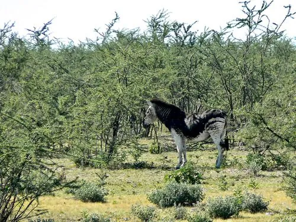

哺乳动物 · 动物界
平原斑马 Equus quagga

非洲稀树草原上最常见的斑马，黑白条纹既能干扰蚊蝇又能迷惑捕食者，常与角马混群进行大规模迁徙。
- 分类
- 门脊索动物门纲哺乳纲目奇蹄目科马科属马属
- 栖息环境
- 稀树草原与短草草地，靠近水源的开阔地带
- 地理分布
- 非洲东部和南部，从埃塞俄比亚、肯尼亚到南非的草原
- 保护级别
- IUCN 近危（NT）
物种志
平原斑马体长 2.2–2.5 米（含尾），肩高 1.1–1.45 米，体重 175–385 kg，雄性略大。它的全身覆盖黑白相间的条纹，条纹在颈部较宽、在腿部变窄；皮肤本身是黑色的，条纹间的白色来自毛色。每只个体的条纹组合都不相同，幼驹的条纹在出生后仍会随生长变化。
平原斑马栖息于非洲东部和南部的稀树草原与草地，主食短草，也啃食灌木嫩叶，每天需饮水 1–2 次。它们结成由一只雄马、数只雌马及幼驹组成的家庭群，多个家庭群会临时汇成数百只的大群，常与角马混群迁徙，利用彼此敏锐的视觉和嗅觉共同警戒狮子、鬣狗。斑马奔跑时速可达 65 km/h，后蹄踢击也能重创捕食者。由于狩猎与栖息地破碎，部分地区的种群明显下降。
形态与习性
- 食性以短草为主，也啃食灌木嫩叶
- 体长2.2–2.5 m（含尾）
- 肩高1.1–1.45 m
- 体重175–385 kg
- 寿命野外约 20 年
- 繁殖妊娠期约 12 个月，每胎 1 仔
- 社会结构家庭群由一只雄马、数只雌马及幼驹组成
趣味知识
- 每只平原斑马的条纹组合都不相同，像条形码一样可辨认个体。
- 条纹被认为能干扰吸血蝇降落，也能在群体奔跑时迷惑捕食者。
- 斑马常与角马混群迁徙，互相借助对方的感官共同警戒天敌。
- 斑马的皮肤其实是黑色的，白色来自条纹处的毛发。